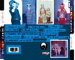

|
CD #1
Apartinthemiddle (1998)
includes: Mass O Tunes, Nada Novo, Jenifer, Let Go, Fake Stars, 3:05 On The Hill,
Chapped Lips and Steady Hips, It's A Fish, Funnyman, C is For Crass, Dog ITMOB,
Inspiration Fleece
 
This luscious new disc has 12 new songs, or at least 12 songs that are probably new to
you. That's all that's important, right? Anyway, if you'd like to buy it, and you have
cash ($8) then just send us an e-mail with
your address and we'll send you one - assuming you're going to send us some cash. If
you're into plastic then head over to CDBABY
and pick one up using your plastic of choice. They'll also let you hear a track or two
from the CD so you can be sure you'll be purchasing a high quality audio product.
Below there are lyrics, music, and reviews--all in that order.
Speaking of which, have you heard the new CD? Hmmmm.....maybe the music
tempted your tummy with the taste of nuts and honey and now you're interested in some
lyrics? Choose what you need below.

(psst. this is what you can use to listen to the songs)
SONGS FROM APART IN THE MIDDLE
|
Track/Song/Tune/Melody
|
MP3 - song download
|
Lyrics
|
|
Mass O Tunes
|
Mass o Tunes
|
|
|
Nada Novo
|
|
|
|
Jenifer
|
|
|
|
Let Go
|
|
|
|
Fake Stars
|
|
|
|
3:05 On The Hill
|
|
|
|
Chapped Lips & Steady
Hips
|
|
|
|
It's A Fish
|
|
|
|
Funnyman
|
|
|
|
C is For Crass
|
|
|
|
Dog ITMOB
|
|
|
|
Inspiration Fleece
|
|
|
REVIEWS
Inner Prism Hands down, this is the best CD I've been sent to review so far. This band from
Cambridge, Mass consists of Jaime d'Almeida, John Haydon, and Dave Zimmerman. fIVE dOLLAR
mILKSHAKE (think of Pulp Fiction and you should get the name of the band) sounds like a
mix of Counting Crows, Buffalo Tom, and The Rolling Stones. This CD is fun, upbeat, but,
at times, is soft and melodic. The one constant with all 12 songs is the musicianship.
Everything mixes really well, nothing sounds out of place. fdm reminds me of a band you go
to see in a bar and before you know it, they're on the last set and you're thinking,
"is it that late already?" My favorite songs on the CD were "Mass O
Tunes", "Nada Novo", "Jenifer", "Dog ITMOB", and
"C is for Crass", which may just be one of the best songs of the 90's. Everyone
should have a copy of this CD, it's a must. (JJC)
Zine Of The Times First Impression: Five Dollar Milkshake is a good rock band. With some good driving tunes and some nice
ballad's, these guys have a unique sound that should get them far in the music business.
They have some very talented musicians and have a good knowledge of how to put songs
together. If you like rock that is not too heavy, you'll like Five Dollar Milkshake. Oh
yea, ask them how they got their name for the band. Some suggestions: Nicely put together piece of work. Favorites: Mass O Tunes - Good driving song. Quick and to the point!, Nada Novo - Good rock ballad,
Let Go - I like the organ sound on this one. Good vocals, 3:05 On The Hill - Nice drum
groove here. Good song, C Is For Crass - Another good ballad with some nice vocals,
Inspiration Fleece - Liked the vocals on this one, Mass O Tunes (RA)
This CD is recorded with very good quality and the production is very good as well. Five
Dollar Milkshake has a good thing going here. They have a unique sound with some very good
musicians. With well put together songs and good lyrics, Five Dollar Milkshake should go a
long way in the music business. Check em' out!
Overall on a scale from 1-5, I give it a 4.
Orange Street Press Listening to this fine CD, I found myself flashing on Adam Duritz and Counting Crows,
particularly the harder edged Recovering the Satellites album. That's not a bad deal, to
be thinking of a band like that whilst drinking in this band -- it reflects five dollar
milkshake's roots rock sound -- but so many bands don't take the sound much further than
what a jaded critic might chalk up as a pleasant but derivative take on the norm. But as I
listened to the CD again and again I found that this Boston-based band has its own
identity for sure -- there's wit, humor, even some homespun heartland countrified emotion.
There's also a quirky, punky edge that shouldn't be overlooked. It all comes down
ultimately (and as usual) to the songwriting. There's no substitute for good, diverse,
solid songwriting, and this band delivers the goods. All this wrapped in appealing but not
overly slick DIY production. There's some great sounding hammond organ backing up the core
guitar/drums/bass trio of Jaime d'Almedia, Dave Zimmerman, and John Haydon.
Let's cut to the chase. This one's a keeper. Essential rock and roll, especially for those
of old enough to be steeped in earthy 70's rock. Keep an eye glued to these up and comers.
j. esch
Anti-Elitist Audio Zine It took a few listens, but I really started to like this album. I hear a lot of Uncle
Tupelo influence in the vocals and music. Plenty of lyrical hooks. I guess what made me
hesitant at first was the overuse of the Hammond organ at times. Don't get me wrong. I
love that sound, but this just reminded me of the Black Crows, and I just need more time
to recover from that traumatic period of music. But hey! It's just a session player on a
couple of songs. John, Jaime and Dave play several great stripped down rock tunes like
"Mass O Tunes", "3:05 On The Hill", and one of this issues features...
"It's A Fish". I was torn between "Fake Stars", "C Is For
Crass", and "Inspiration Fleece" for a second tune to stick in this issue,
but I opted for the latter. A great quirky little tune. I'd like to hear what these guys
do next. Email them fdm@fivedollarmilkshake.com
@NZONE Sorry, guys, but I've got to talk about your neat packaging first. I mean, the first thing
that you experience in a new cd is how it looks sitting in the store (unless you're buying
Celine and it's already all over the radio like glue). I don't think I've ever seen a
funnier, more happening look than what my eyes scan on the Milkshake. First, they tell you
the whole album will fit on 1 side of a 90 minute tape, if you want to illegally make
copies. They also give you warnings like 'don't listen to this while watching The Wizard
of Oz'. I know, maybe that doesn't sound real funny, but I find myself looking through the
whole package, looking for little bits of comedy like I'm about to play a Monty Python
game and I'm reading the manual Slowly. The pix on the back are of various kids in
Halloween costumes. I like that. Also, for you idiots who read soup can instructions, it's
clearly labeled which is the cd and which is the booklet, so you don't play the paper.
The music? What if I said: The power of punk with the accessibility of p-pop. Very
intelligent and personal lyrics combine with catchy tunes that could wind up on either
mainstream or college radio, depending on how deep the dj is. Hearing 'Jenifer' reminds me
of my first sexual experience, when Jenny and I were both 7 and playing doctor for the
first time. (Was it the first for her?) Titles like 'Fake Stars' and 'It's A Fish' tell
you, yes, it's okay to have a sense of humor and still be cool. Does Five Dollar Milkshake
smile when they play? They should. The drumming has soapy snap, crackle and pop, and the
lead singer, while great, yet to my ears like a lot of voices out there, has that
argumentative quality that could croon, plead, bitch, and plant a garden sometimes all in
the same musical sentence. In some ways I'd call this feel good 90s rock, but since there
are no lyrics in the fun booklet, I don't know if the tone for these songs is basically
negative or A positive. From 'Let Go' we get 'doctor, don't you drink that tonic. a fool's
gold got in it'. Pretty good.
Dave Zimmerman (drums and vocals), John Haydon (bass and vocals), and Jaime D'almeida
(vocals and guitar) have a lot of power for a trilogy of multi-talents. (No one Only plays
1 instrument.) You know they're gonna rock whatever club opens up for them. And I hope
they get some fine candy corn this Halloween. Remember, C is for crass!
Altar Native (3/99) Musically it succeeds. From the guitars to the vocals to the rhythm section to
the choruses and verses, "Apartinthemiddle" has everything to make it to the
Top-40 radio airplay. Unfortunately, this is also what makes this album no different
than many releases out there today. Some songs do stand out, such as "Nada
Novo," "Let Go" and "Chapped Lips and Steady Hips."
Creative bursts rear their head from time to time, but never appear long enough to make
this album memorable - Omar Perez
Johnny Can't Read The press kit says fIVE dOLLAR mILKSHAKE are greatly influenced by the Rolling Stones.
I don't hear it. They remind me more of Live. Very radio friendly and
poppy. I do really like Nada Novo and Jenifer. Both songs are written really
well and the light poppy sound of the band works well with the lyrics and heartfelt
vocals. Unfortunately, those were two of the first three songs. From there
things kind of went downhill. What was really missing from the rest of the songs
were the strong lyrics. All in all, this isn't a bad CD, but it could have been much
better had the lyrics been as strong as throughout as in Nada Novo and Jenifer. - shawn
Impact Can you feel the groove? I can. $5Milkshake play cream-of-the-crop college
rock that is very rootsy. They combine all those traditional elements -- funk, pop,
country, rock, soul -- but they do it well. You could very easily imagine their
style of music on the radio following a Matchbox 20 tune. Band's
response: UGH!!!!!!!
24-7 Five Dollar Milkshake take their unusual name from a scene in the ultra-cool Pulp
Fiction. like the movie, the Boston-based trio manages to combine a passion for
Retro with modern hipness in their debut CD 'apartinthemiddle'. The group cites
contemporary influences such as Buffalo Tom and Uncle Tupelo, but one can also hear shades
of a down-home Van Morrison and The Band in their musical stylings.
Singer/guitarist Jaime d'Almeida employs an almots off key, storytelling vocal delivery
reminiscent of Counting Crows. Musically, fdm is less easy to pin down; ranging from
straight-ahead strumming (Nada Novo) to Crazy Horse guitar meltdown (3:05 On The Hill).
While many tracks have a limited happy-go-lucky college bar band feel,
others-particularly the percussion/Hammond organ extendo-jam "Dog ITMOB" seem
ready for Prime Time. Impressive, brainy debut from the 'SHAKE ers. Stay
tuned. - Dave Collette
|